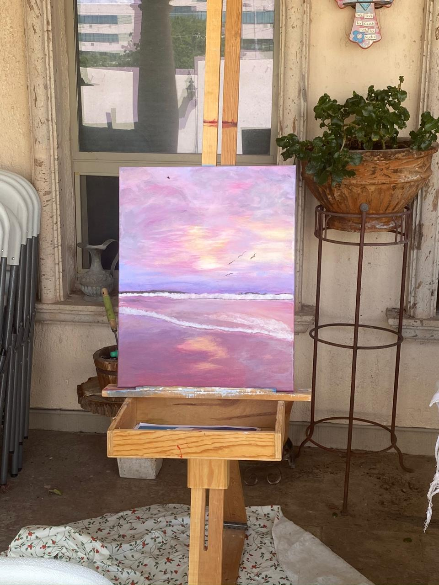

Que necesito administrar mi tiempo, Estar con tantos artefactos me distrae mucho de lo que necesito hacer.
CSS es un lenguaje de hojas de estilos creado para controlar el aspecto o presentación de los documentos electrónicos definidos con HTML
Porque no solo permite que se vea bonita la pagina sino que el usuario pueda interactuar con ella.
| Maneras | Ventajas | Desventajas |
|---|---|---|
| Incluir CSS en el propio documento HTML | Esta a la mano para cualquier modificación | Su desventaja es a la hora de modificar los estilos, ya que debemos cambiar los estilos de todas las páginas donde lo hayamos incluido de esta manera. |
| Definir CSS en un archivo externo | En un solo archivo podemos incluir una multitud de páginas HTML. | Borrar accidentalemente el archivo o cambiarlo de localización |
| Incluir CSS en los elementos HTML | Para formatos mas específicos | Mas tardado si se quieren utilizar mas estilos |
Lo hago para distraerme y despejarme
Me gusta pintar mientras tomo café y tengo música de fondo
Si, porque me siento vulnerable.
